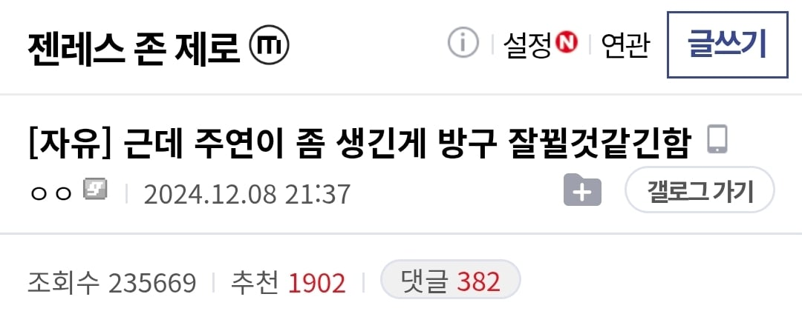
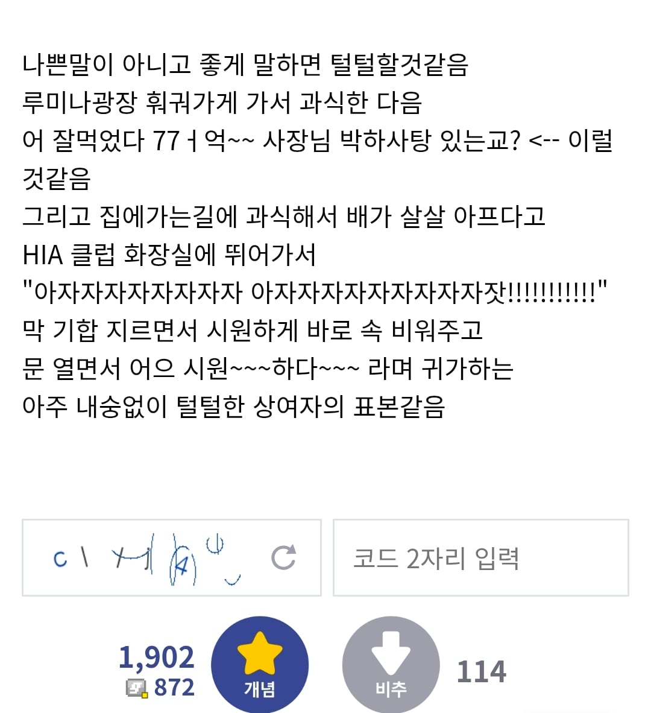
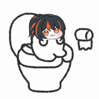
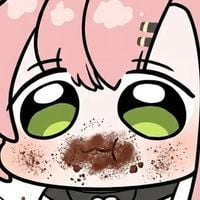
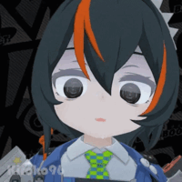
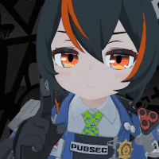
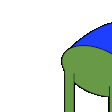

해당 게시물에서 쓰인 표현이 원본이라고 알려져 있음
참고로 주연은 이렇게 생긴 캐릭터


해당 게시물에서 쓰인 표현이 원본이라고 알려져 있음
참고로 주연은 이렇게 생긴 캐릭터
이렇게 생긴 캐릭터라면서 궁뎅이만 보여주노

데이터 아끼려 그 캐릭의 핵심만 보여주는 것


궁뎅이 ㅈㄴ 커서 방구도 시원하개 뿌다다다닥 할거같긴함
어흐 똥탱크 보소
아 자 자 잣
내아내임
저 부분이 제일 많이 본 부분인가 그럴껄ㅋㅋㅋ


난 저거 엔평 밈인줄 알았는데 젠평이었어? 엔북공정 당한거임?
젠존제 개념글 재미잇음
지뢰가 몇개 있긴한데
주청니 상향 좀
ㅇㅈ 니는 몰라도 주청은 제발 좀
주연테크 유튜버?
가챠게임 메인 컨텐츠
남캐/여캐 성희롱 ㅋㅋㅋ
어흐 된장통
이제는 아자자잣만 남은 캐릭터...
회피모션도 추가해
괴짜가족이 아니었다니...
